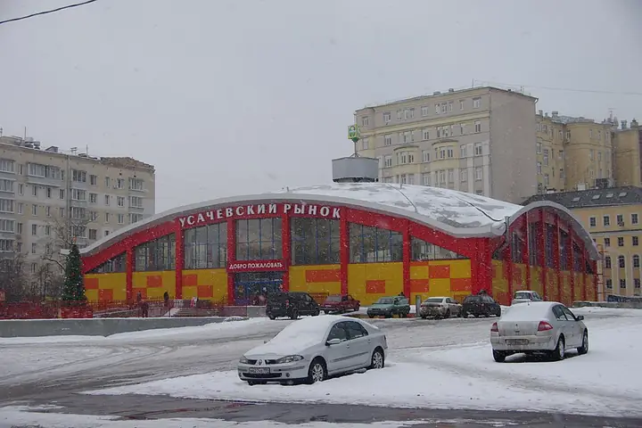
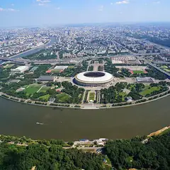

Фото: Artem Svetlov, CC BY 4.0 · Wikimedia Commons
Рынок и фудкорт · ЦАО
Усачёвский рынок
Фермерские прилавки, фудкорт с проектами известных рестораторов и веранда. 10:00–22:00.
- ₽ · до 1 500 ₽ на человека
- в 1 плане
Позвать сюда: Усачёвский рынокОткрыть в каталоге: Усачёвский рынокМаршрут до места: Усачёвский рынок
Адрес и детали
- Адрес
- ул. Усачёва, 26
Открыть на Яндекс Картах (в новой вкладке) - Метро
- м. Спортивная
- Округ
- Центр (ЦАО)
- Цена
- до 1 500 ₽ на человека
Планы с этим местом 1

- Лужники · Стадион · м. Воробьёвы горы
- 27 минут пешкомУсачёвский рынок · Рынок и фудкорт
Дневной матч в Лужниках (расписание — на сайте стадиона), а потом около получаса пешком до Усачёвского рынка: на фудкорте каждый выберет своё, открыт до 22:00.
Открыть план: Матч в Лужниках и рынокПозвать сюда: Матч в Лужниках и рынок
Фото: mos.ru, CC BY 4.0 · Wikimedia Commons
Похожие рядом
Что ещё рядом

Как позвать
- Выбери план, место или событие — в карточке адрес, цены и маршрут в Яндекс Картах.
- Нажми «Позвать сюда» — соберётся приглашение-игра для свидания или голосование для компании.
- Отправь ссылку в любой мессенджер: тебе ответят, а компания отметит, куда и когда может. Бесплатно и без регистрации.